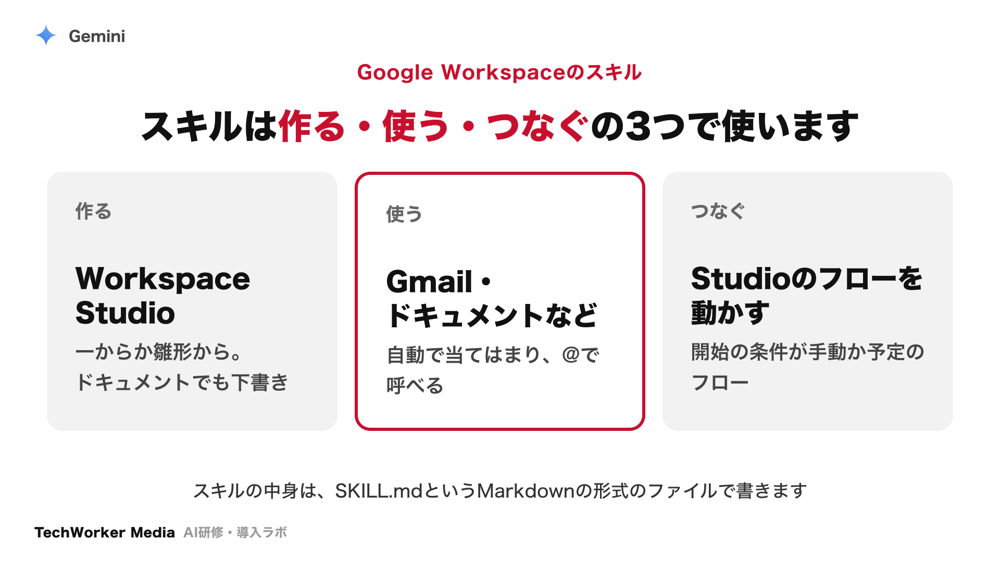
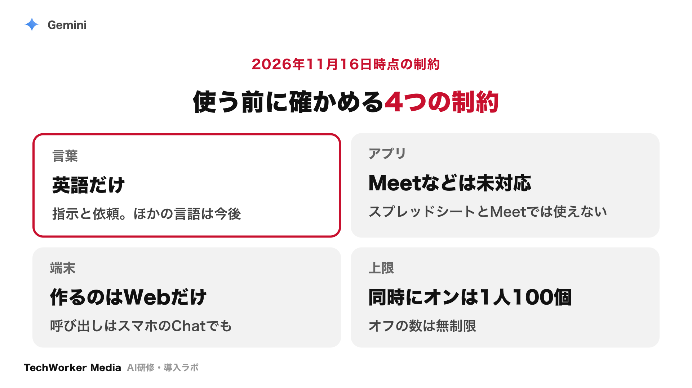
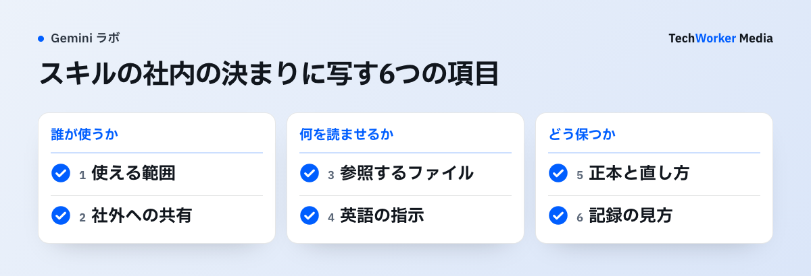
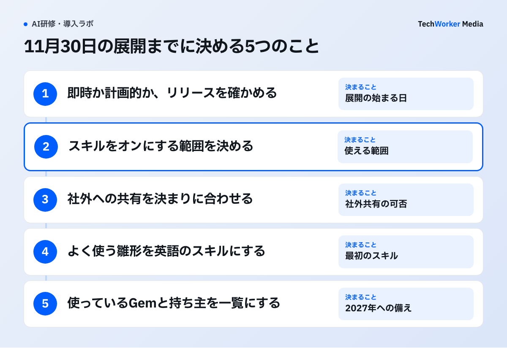

Google Workspaceのスキルは、Gmailやドキュメントで、Geminiに社内の決まり・雛形・参照資料を守らせる指示のまとまりです。2026年11月9日から順に広がっています。
- 既定でオン：対象のエディションでは、管理者が何もしなければ全員が使えます。管理者はドメイン、組織部門、グループの単位で止められます。
- 展開の日：即時リリースの会社は11月9日から、計画的リリースの会社は11月30日から、最長15日かけて画面に出ます。
- 注意点：スキルに書く指示と、使うときの依頼は、英語だけに対応します。GeminiアプリのスキルやGemとは別物で、自動では同期しません。
Google Workspace Updatesの発表と管理者向けヘルプ（2026年11月16日確認）をもとに、管理者の設定と、展開の前に決めることをまとめます。
Google Workspaceのスキルとは何ですか？
チームの決まり、雛形、参照するファイルをGeminiに当てはめさせる、繰り返し使える指示です。Workspace Studioやドキュメントで作り、GmailやGoogle スライドで呼び出します。
Googleは、2026年11月10日の発表で次のように説明しています。
原文“skills in Google Workspace — reusable, custom instructions that guide Gemini to apply your team’s rules, templates, and reference files — are now rolling out across Google Workspace Studio and Workspace apps.”
日本語訳Google Workspaceのスキル（チームの決まり、雛形、参照ファイルをGeminiに当てはめさせる、再利用できる独自の指示）が、Google Workspace StudioとWorkspaceのアプリで展開されています。
同じ発表によると、スキルの使い方は次の3つです。
- 作る：Workspace Studio（業務の自動化の画面）で、一から作るか雛形から作ります。ドキュメントのSkill Builderでも下書きできます。
- 使う：Gmail、ドキュメント、スライド、ドライブ、ChatのGeminiが、関係するスキルを自動で当てはめます。「@」で名前を呼んで使うこともでき、複数を組み合わせられます。
- つなぐ：開始の条件が「手動」か「予定」のWorkspace Studioのフローを、スキルから動かせます。
発表に挙がった例は3つです。営業資料の言い回しをそろえる、Driveにある基準で契約書や請求書を確かめる、毎週の進み具合の報告を作る、です。スキルの中身は、SKILL.mdというMarkdownの形式のファイルで書きます。

この発表で分かるのは、機能と展開の予定までです。日本語の文書の作成にどこまで使えるかは、自社で試して確かめる必要があります。
いつから、どのエディションで使えますか？
即時リリースの会社は2026年11月9日から、計画的リリースの会社は11月30日から順に使えます。対象はBusinessとEnterpriseの主なエディションで、18歳以上の利用者です。
| 新機能のリリースの種類 | 展開の始まり | 画面に出るまで |
|---|---|---|
| 即時リリース（Rapid Release） | 2026年11月9日 | 最長15日 |
| 計画的リリース（Scheduled Release） | 2026年11月30日 | 最長15日 |
出典：Google Workspace Updates（2026年11月10日、2026年11月16日確認）
対象のエディションは、発表ではBusiness Starter・Standard・Plus、Enterprise Starter・Standard・Plus、Google AI Pro for Education、AI Expanded Accessです。管理者向けヘルプの一覧にはEnterprise Starterがなく、発表とそろっていません。Enterprise Starterの会社は、管理コンソールで設定が出るかを確かめます。
使える場所と言葉には、2026年11月16日時点で次の制約があります。
- 言葉：スキルに書く指示と、使うときの依頼は、英語だけに対応します。ほかの言語は今後の更新で広がる予定です。
- アプリ：スプレッドシートとMeetでは、まだ使えません。
- 端末：スキルを作る・直す・試す・共有するのはWebだけです。呼び出しはWebと、スマートフォンのChatのアプリでできます。
- 上限：同時にオンにできるスキルは1人100個までです。オフのスキルの数に上限はありません。

スキルは、対象のエディションで使える機能です。発表に追加料金の記載はありません。エディションごとの料金はGeminiの法人契約と料金にまとめています。主要4社の料金比較表と、社内利用ルールの雛形は、下の枠から受け取れます。
管理者は、どこで止めたり広げたりできますか？
Google 管理コンソールのWorkspace Studioの設定で、スキルを使える人と、社外への共有を決めます。どちらも組織部門ごとに変えられます。
| 決めること | 管理コンソールの場所 | 単位と反映 |
|---|---|---|
| スキルを作る・使う | アプリ ＞ Google Workspace ＞ Workspace Studio ＞ Skills ＞ Create and use skills | ドメイン、組織部門、グループ。最大24時間 |
| 社外への共有 | 同じ画面の Skills ＞ Sharing outside your domain | 組織部門。最大24時間 |
| 使われ方の記録 | Workspace Studioのログイベント | スキルの使われ方と共有の変更を確かめる |
出典：Google Workspace 管理者ヘルプ「Allow people to use skills in Studio and Gemini in Workspace」「Allow people to share skills externally」（2026年11月10日更新、2026年11月16日確認）
設定を変えるには、サービスの設定の管理者権限が必要です。グループの設定は、組織部門の設定より優先されます。全社ではオフにして、試す部署のグループだけオンにする、という分け方ができます。
オフにすると、利用者は作ってあったスキルも使えなくなります。Workspace Studioのスキルのページも開けません。一度広げてから止めると、使っていた人の作業が止まります。
スキルが参照するDriveのファイルの扱いにも注意が要ります。スキルを共有すると、受け取った人は独立したコピーを持ちます。スキルがDriveのファイルを参照している場合は、そのファイルも別に共有する必要があります。社外への共有は、管理コンソールの「Skills ＞ Sharing outside your domain」の設定に従います。
Googleの準備のヘルプは、Workspaceのスキルの管理に、データ損失防止（DLP）のルールとDriveの共有の設定も関わると書いています。Gemini向けのDLPで止められる範囲は、AI DLPとはで扱っています。Gemini Enterpriseでは、別にスキルの一覧（Skill Registry）で審査と配布を管理します。
GeminiアプリのスキルやGemsとは何が違いますか？
別物です。WorkspaceのスキルとGeminiアプリのスキル・Gemは、自動では同期しません。2027年の自動の移行も、Geminiアプリの中だけで行われます。
| 比べる点 | Google Workspace | Geminiアプリ | Gemini Enterprise |
|---|---|---|---|
| 使う場所 | Workspace Studio、Gmail、ドキュメント、スライド、ドライブ、Chat | GeminiのWebとスマートフォンのアプリ | Gemini EnterpriseのWebアプリ |
| 管理者の設定 | Workspace Studioのスキルの設定、社外共有、ログ、DLP、Driveの共有 | Geminiアプリの利用の設定 | Skill Registryで審査・承認・配布 |
| 共有 | 独立したコピーを渡す（参照ファイルは別に共有） | リンクでの共有は今後 | 部署・組織部門へ配る |
出典：Google Workspace 管理者ヘルプ「Prepare your organization for the transition to skills」（2026年11月9日更新、2026年11月16日確認）をTechWorkerが日本語にまとめたもの
GeminiアプリのGemsの予定は、管理者向けヘルプに次のとおり書かれています。
- 2026年11月17日：GemsがGeminiアプリの設定の中へ移ります。作る・直す・使うは続けられます。
- 早ければ2027年3月1日（BusinessとEnterprise）：スキルがGemsを完全に置き換え、Gemsは作ることも使うこともできなくなります。残ったGemは、Geminiアプリの中の下書きのスキルに自動で変わります。教育機関は早ければ2027年6月1日です。
- Workspace Studioのフロー：Gemに質問する手順（Ask a Gem）は、新しく足せなくなっています。
WorkspaceのスキルとGeminiアプリのスキルは、どちらも同じSKILL.mdの形式です。両方で使いたい指示は手で写せます。社内のGemの棚卸しの手順は、GeminiのGemからスキルへの移行で説明しています。同じSKILL.mdの形式は、MicrosoftのCopilot Coworkのスキルでも使われています（Copilot Coworkとは）。
社内の決まりとして、何を先に決めますか？
誰が作って共有してよいか、社外に共有してよいか、参照するファイルの権限をどうするかの3つを、展開の前に決めます。

ここからはTechWorkerの提案です。公式の設定と制約から、社内の決まりに写す項目を6つ挙げます。
- 使える範囲：全社でオンのままにするか、試す部署のグループだけにするかを決めます。
- 社外への共有：取引先にスキルを渡してよいかを決め、Sharing outside your domainをそれに合わせます。
- 参照するファイル：スキルを共有すると、参照するDriveのファイルも共有が必要になります。社外秘のファイルを参照するスキルは、共有しない決まりにします。
- 正本と直し方：共有したスキルはコピーで、元を直しても他の人の分は変わりません。部署の正本のスキルを置く場所と、直したときの知らせ方を決めます。
- 英語の指示：指示は英語で書く必要があります。日本語の文書を作るときの出来は、試す部署で確かめます。
- 記録の見方：Workspace Studioのログイベントで、スキルの使われ方と共有の変更を月に1回見ます。どこまで記録されるかは、自社の管理コンソールで確かめます。
Geminiの会社アカウントの設定全体は、Geminiの法人導入の記事にまとめています。Geminiアプリで既定でオンになった別の機能の設定は、Gemini Notebookの記事で扱いました。11月10日から広がったGmailの要約とHelp me writeの止め方は、GmailのGeminiが既定でオンにでまとめています。Meetの音声翻訳とChatへの会議の要約の設定は、MeetのGeminiが既定でオンにで扱いました。
11月30日の展開までに、何をすればよいですか？
計画的リリースの会社は、11月30日の展開が始まる前に、残す範囲・社外共有・最初の1つのスキルを決めます。即時リリースの会社は、すでに展開が始まっています。

- リリースの種類を確かめる：自社が即時リリースか計画的リリースかを、管理コンソールで確かめます。
- 残す範囲を決める：Create and use skillsを、全社・部署・グループのどれでオンにするか決めます。
- 社外への共有を決める：Sharing outside your domainを、社内の決まりに合わせます。
- 最初のスキルを作る：試す部署で、よく使う雛形を1つ英語の指示にし、出来を確かめます。
- Gemsを棚卸しする：2027年3月1日からの置き換えに備え、使っているGemと持ち主を一覧にします。
何もしなければ、対象のエディションでは全員がスキルを作れます。オフにすると作ってあったスキルも使えなくなるため、後から絞ると、使い始めた人の手順が止まります。範囲は展開の前に決めるのが安全だ、というのがTechWorkerの考えです。
Google Workspaceの中でClaudeを使う場合の承認と保存の確認点は、ClaudeをGoogle Docs・Sheets・Slidesで使うにまとめています。Keynote・Pages・Numbersを使う部署がある場合は、Keynote・Pages・NumbersのAI機能で研修前に確かめる利用条件を見られます。
よくある質問
2026年11月10日の公式の発表に、追加料金の記載はありません。対象のエディションの利用者が使えます。エディションごとの料金は、Geminiの法人契約の記事にまとめています。
2026年11月16日時点では、スキルに書く指示と、スキルを使うときの依頼は、英語だけに対応しています。ほかの言語は今後の更新で広がると、公式のヘルプに書かれています。
利用者は、作ってあったスキルも使えなくなります。Workspace Studioのスキルのページも開けなくなります。オンに戻したときの扱いは、確かめた公式ページに記載がありません。
移りません。2027年の自動の移行は、GemをGeminiアプリの中の下書きのスキルに変えるだけです。Workspaceでも使う場合は、SKILL.mdの指示を手で写します。
2026年11月16日時点では使えません。使えるのは、Workspace Studio、Gmail、Google ドキュメント、Google スライド、Google ドライブ、Google Chatです。Chatはスマートフォンのアプリからも呼び出せます。
次の一歩は何から始めればよいですか？
管理コンソールで、自社のリリースの種類と、Workspace Studioのスキルの設定の状態を確かめることから始めます。
- 管理コンソールで、新機能のリリースの種類と、Skills ＞ Create and use skillsの状態を確かめます。
- 試す部署のグループと、社外共有の設定を決めます。
- 試す部署で、よく使う雛形を1つスキルにして使います。
TechWorkerでは、Geminiを含む生成AIの研修を、受講者の実際の業務1本から組みます。30日後に、使った人の割合と1件の時間を測って報告します。検討段階のご相談だけでも歓迎です。
出典と確認範囲
確認日：2026年11月16日。管理コンソールの画面と、日本語の文書を作るときの出来は、TechWorkerでは確かめていません。機能と提供の条件は変わるため、設定の時点で公式情報を確認してください。社内の決まりの6項目はTechWorkerの提案です。
- Google Workspace Updates「Scale customized AI across your team with skills in Google Workspace and Workspace Studio」（2026年11月10日）
- Google Workspace 管理者ヘルプ「Allow people to use skills in Studio and Gemini in Workspace」（2026年11月10日更新）
- Google Workspace 管理者ヘルプ「Allow people to share skills externally」（2026年11月10日更新）
- Google Workspace 管理者ヘルプ「About the transition from Gems to skills」（2026年11月9日更新）
- Google Workspace 管理者ヘルプ「Prepare your organization for the transition to skills」（2026年11月9日更新）